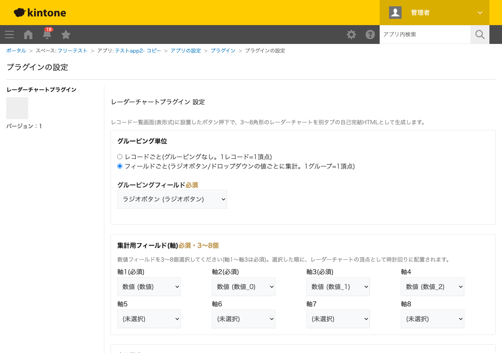

GovAppsプラグイン 安全性を確認できる無料kintoneプラグイン集
レコード一覧画面(表形式)に設置したボタンを押すと、3〜8角形のレーダーチャート(レーダー/スパイダーチャート)を 別タブの自己完結HTMLとして生成するプラグインです。「表示中のレコード」または「絞り込み条件に一致する全件」を 選んで生成でき、レコードごとに比較する、あるいはラジオボタン/ドロップダウンの値ごとにグループ集計して 比較する、の2通りのグルーピングに対応します。系列(レコードまたはグループ)ごとに小さなチャートを カード形式で並べて表示するため、件数が多くても見比べやすいのが特徴です。
「グルーピング単位: レコードごと」を選ぶと、1レコード=1カード(多角形チャート)として描画されます。商品ごとの評価項目(品質・価格・納期・サポートなど)や、案件ごとの複数指標を並べて比較したい場合に使えます。設定画面で選んだ「バッジフィールド」の値は、各カードの見出しにバッジ(チップ)として表示されます。
「グルーピング単位: フィールドごと」を選び、ラジオボタンまたはドロップダウンのフィールド(担当者区分・部署・カテゴリーなど)を1つ指定すると、その値ごとにレコードをまとめて1カードとして描画します。集計値は生成後の画面上で「合計」「平均」をボタン1つで切り替えられるため、件数が異なるグループ同士でも公平に比較できます。
レコード一覧画面で絞り込み条件を設定したうえでボタンを押し、「絞り込み条件の全件で作成」を選ぶと、現在の絞り込み条件に一致する全レコード(設定した上限件数まで)を取得してチャートを生成します。「表示中のレコード」を選べば、現在ページに表示されている行だけで素早く確認できます。
対応画面はPCのレコード一覧画面(表形式)のみです(カレンダー形式・カスタマイズビュー、モバイルは対象外)。生成されたHTMLファイルはブラウザのタブ上にのみ存在し、kintone側には保存されません。
kintoneセキュアコーディングガイドラインに沿って実装時にチェックしています。特に重要な点は次のとおりです。
<script type="application/json">の中に1箇所だけJSON文字列として埋め込み、JSON.stringify()がエスケープしない</を<\/に置換してタグ脱出を防いでいます。埋め込んだJSONはJSON.parse()した上でtextContent/DOM APIのみで描画し、innerHTML・insertAdjacentHTML・document.writeは一切使用していません。Blob化し、同一ブラウザの新しいタブに開くのみで、外部サーバーへの送信は一切行いません。kintone.api()(内部向けラッパー)のみを使用し、offsetを使わない$id昇順ページングを採用しています。件数上限(既定2000件)を設けており、無制限に取得し続けることはありません。詳細な確認項目・確認日は下記GitHubのチェックリストに全項目を掲載しています。

レコード一覧画面の表示のたびに、フォーム項目取得API相当のJavaScript API(kintone.app.getFormFields())を
実行します(同一画面内ではキャッシュして再利用します)。「絞り込み条件の全件で作成」を選んだ場合のみ、
レコード取得API(GET /k/v1/records.json)を500件ごとにページングして実行します
(設定した上限件数、既定2000件に達するか、全件取得が完了するまで)。「表示中のレコードで作成」を選んだ場合は
追加のレコード取得APIは実行しません。